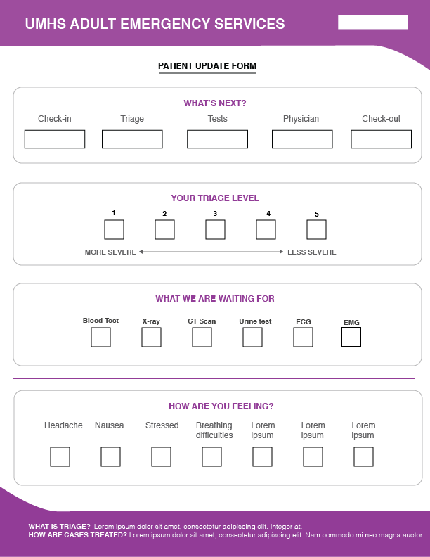
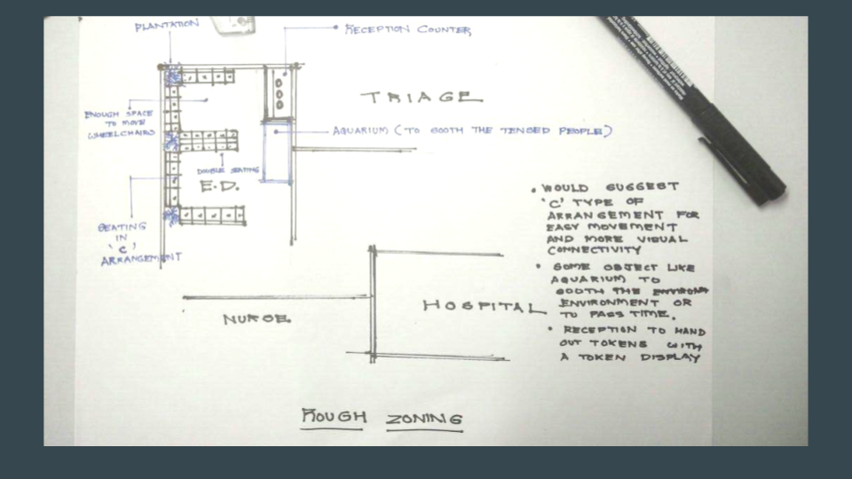
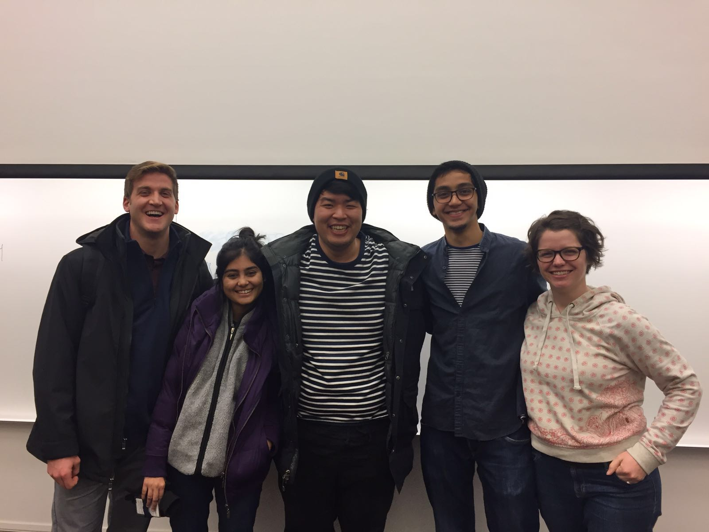

*Group project for Contextual Inquiry, Sept-Dec 2016
It has been found from patient relations data, as well as patient satisfaction data, that the wait in the Emergency Department (ED) is excessive, and the lack of communication makes it even more difficult. The hospital wanted a team to investigate the best way to communicate the wait, and to assess how they might otherwise improve the patient experience in the adult ED at UMHS. The hospital has a system that informs about the approximate wait time, but they were hesitant to make it available to the patients since they found it to be too technical for the patients.
——
We first met with the client to get a better understanding of the problem. This was crucial since we were able to ask more questions and get much better insights into the probem in addition to the client's brief. To get more information about the problem, we did a background research report with each of us picking a different topic like client history, competetive ananlysis, etc. I did a literature review of the concept of wait time and the factors affecting it.
We established the Interview Protocols and narrowed down potential interviewees. After working with our client, we scheduled the interviews. The interviewees were selected in a manner to gain perspective from diverse job roles. Each interview followed a semi-structured format, and lasted for about an hour. A certain number of questions to be asked were decided prior to the interview, and the rest were based on the interviewee's responses. After every interview, the team met for an interpretation session where the notes from the interview would be discussed and the information would be interpreted into brief statements. The team also conducted a couple of observation rounds nad noted down the findings.
The interpreted notes were used to create an Affinity diagram using post-its. Ideas with a common theme were grouped together. This helped us narrow down the notes to 5 themes. These themes were the findings, on the basis of which the recommendations were decided
——
The scope of our project was limited to points 4 and 5, while point 3 was beyond our control. Considering these two points, we decided that Patient Education and Patient Communication was the solution to the problem. Our secondary solution was based on point 2.
——
——
I. Patient Education and Patient Communication
We decided that a Patient Update form can be provided with the Wait Time System (WTS). The form has sections for both the staff and patient to fill out. The staff would check the boxes after every stage/ or an update, as the patient is going through the process. The patient, on the other hand, will cehck the symptoms at the start, as well as after any change in the condition. This was, the patients are aware of the whole process, as well as the staff is aware of the change in the patient's condition and can monitor their progress. There will be a few FAQs at the bottom of the form to educate the patients.
The WTS in the waiting room would show the approximate wait times for every triage level. In this way, the patients will be aware of the time they might need to wait. The WTS will also show infograohics about the whole ED process, from Check-in to getting seen by the physician. This will result into patients being aware of the process and will prevent them from setting improper expectations.
II. Infrastructure Modification
From the interviews as well as the observation rounds, we found that infrastructure did affect the patient experience in the ED. A straight up solution would have been to increase the capacity of the ED but it was not feasible. So we decided to improve the current infrastructure. Following recommendations for the waiting room were provided to the client
——
After working closely with the client for 3 months, we presented the following set of recommendations to help alleviate the issue -
——
Team (L-R) : Andrew Miller, Ankita Gupta, (Tim - our Graduate Student Instructor), Gaurang Alat, Kelsey McCormick